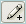

Новый источник доступных данных ASTER
Описание данных и их получение
О данных
В рамках это проекта свободно распространяются данные дистанционного зондирования полученные камерой ASTER спутника TERRA. Уровень обработки в основном L1A, небольшое количество L1B и AST07/09.
Данные представлены в оригинальном формате HDF и получены из EROS Data Center в период 2001-2003 гг на DVD дисках по почте. В отличие от данных ASTER Terralook данные не сжаты JPEG-ом и представлены всеми 14 каналами.
Массив данных был собран в период 2001-2003 г. ГИС-отделом Центра Охраны Дикой Природы и Международного Социально-Экологического Союза для картирования малонарушенных лесных территорий бореальной зоны, включая территории РФ и Канады. Далее он хранился в архиве организации Прозрачный мир.
Условия распространения
На текущий момент, аналогичные данные ASTER распространяются за плату, 80$ за сцену. Однако, данные представленные здесь на сайте были получены в период до того, как данные стали платными, до мая 2003 г. и поэтому, согласно разъяснениям LPDAAC/USGS являются общественным достоянием (public domain).
Официальное письмо от представителя LPDAAC с разъяснениями:
The LP DAAC has two Redistribution Policies that pertain to how the data was acquired. ASTER Policies https://lpdaac.usgs.gov/lpdaac/products/aster_policies Redistribution Policy for ASTER Data Purchased from LP DAAC ASTER data and products purchased through the LP DAAC have no restrictions on subsequent use, sale, or redistribution regardless of the date of purchase. Please find below the Redistribution Policy Redistribution Policy for ASTER No Cost Data Redistribution of ASTER data obtained through the NASA no cost agreement is limited by certain restrictions. Researchers and educators may only redistribute these data to other researchers and educators. These data may not be redistributed to the general public or others not fitting the criteria stated above. Users not complying with this policy will be billed for all data received at no cost and will be subject to loss of their privilege to obtain any additional ASTER data at no cost. However, if the data was downloaded prior to the charging of getting the data, the user can redistribute the data with no restrictions. Acknowledgement: Data available from the Land Processes Distributed Active Archive Center (LP DAAC). Please let us know if you have any further questions. Best regards, Janice Wilson NASA Land Processes Distributed Active Archive Center User Services USGS Earth Resources Observation and Science (EROS) 47914 252nd Street Sioux Falls, SD 57198-0001 Voice: 605-594-6116 Toll Free: 866-573-3222 Fax: 605-594-6963 E-mail: LPDAAC@eos.nasa.gov Web: https://LPDAAC.usgs.gov
С другими вариантами получения данных ASTER можно ознакомиться на специальной странице.
Схема покрытия
Схему покрытия данных можно скачать в виде shape-файла. Обращаем внимание, что в покрытие чуть больше сцен, чем есть в архиве, разница объясняется полной деградацией некоторых носителей и соответственно потерей данных без возможности восстановления.

Получение данных
Для отбора и получения данных - используйте веб-интерфейс.
Небольшая инструкция по использованию интерфейса.
1. Используйте кнопки навигации, а также SHIFT+мышь для увеличения нужного района
2. Используйте кнопку  для выбора нужной сцены или сцен, этот инструмент работает и для выделения сразу нескольких сцен - растягиванием окна выделения
3. Справа в списке появятся выделенные сцены, где можно посмотреть дату, облачность и ссылку для скачивания.
4. Используйте кнопки  для соответственно очистки списка, получения ссылок списком (для загрузки с помощью wget, reget и т.п.) и получения помощи.
для соответственно очистки списка, получения ссылок списком (для загрузки с помощью wget, reget и т.п.) и получения помощи.
У вас тоже есть данные ASTER L1A/L1B?
После покупки данных ASTER через LP DAAC вы получаете на них полные права, включая права на передачу, перепродажу и тому подобные другими словами, вы можете делать с ними все что захотите (см. первое выделение в письме выше). Если данные с этого ресурса оказались для вас полезными, пожалуйста, подумайте о том, чтобы поделиться и своими данными. Пришлите их нам и мы добавим их в каталог.
Быстрый импорт
Импорт данных в формат GeoTIFF удобно делать в GDAL (установка) с помощью следующих команд (замените 110601_081441.hdf на название своей сцены).
gdalwarp HDF4_EOS:EOS_SWATH:"110601_081441.hdf":VNIR_Band1:ImageData b1.tif gdalwarp HDF4_EOS:EOS_SWATH:"110601_081441.hdf":VNIR_Band2:ImageData b2.tif gdalwarp HDF4_EOS:EOS_SWATH:"110601_081441.hdf":VNIR_Band3N:ImageData b3.tif gdal_merge.bat -separate b1.tif b2.tif b3.tif
Ссылки по теме
Дата создания: 20.05.2011
Автор(ы): Максим Дубинин, Mavka